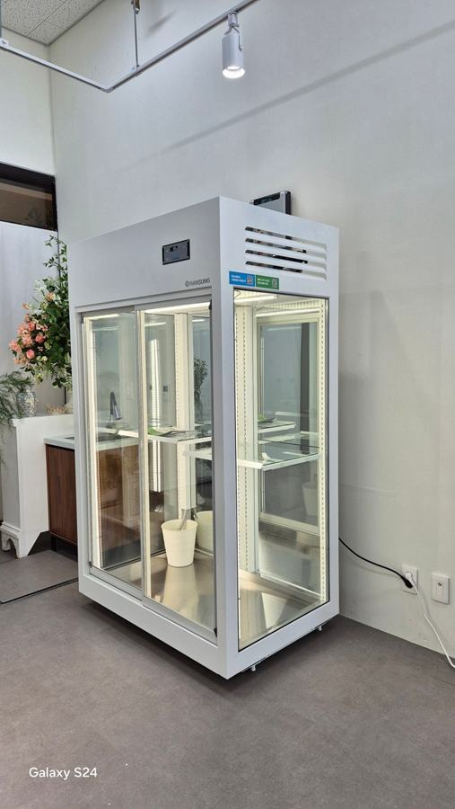
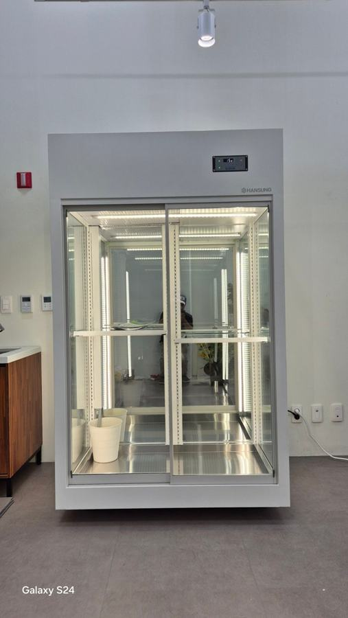
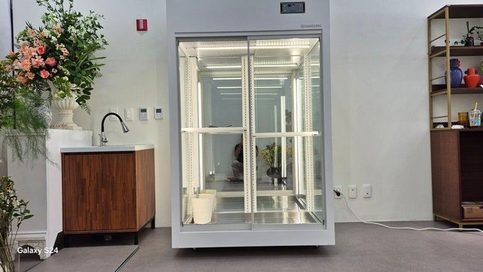
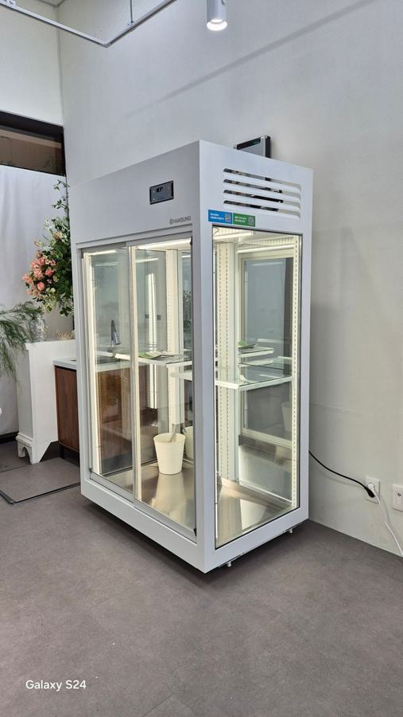
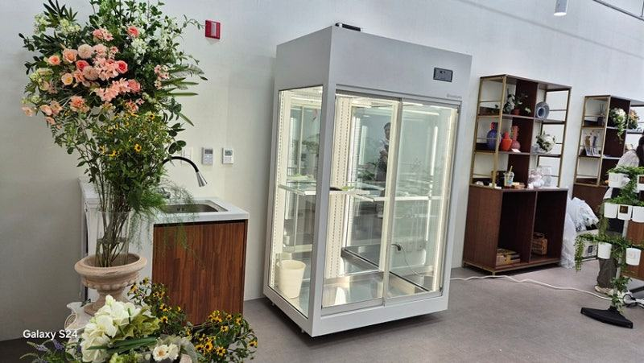
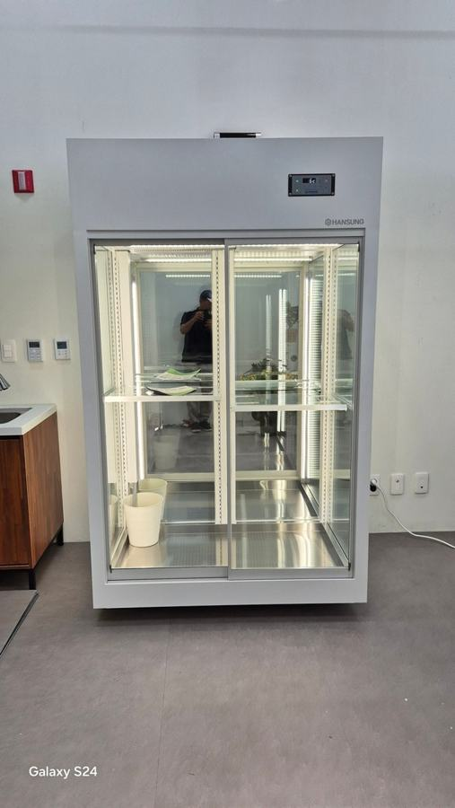
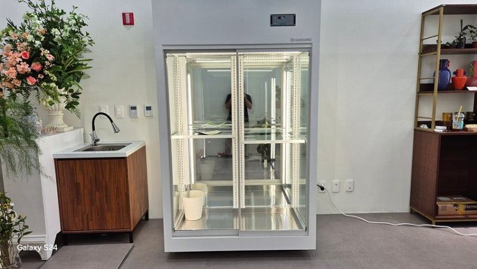
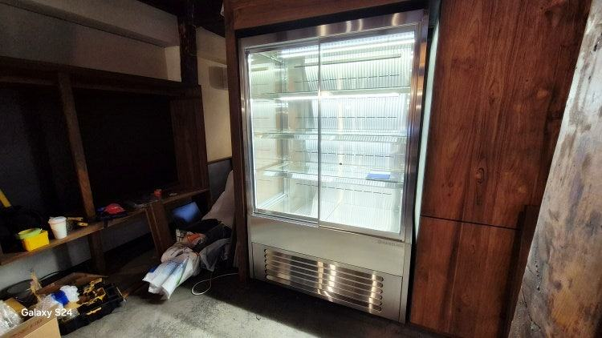
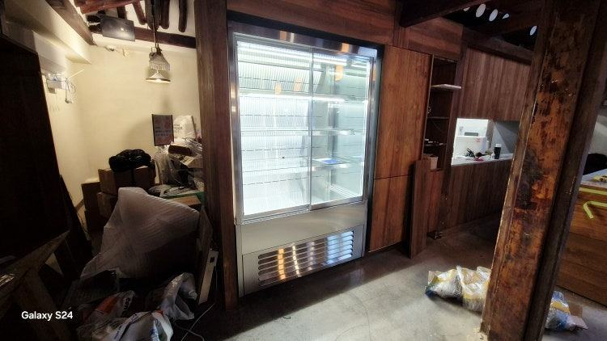

정육쇼케이스
고깃집 창업 준비물, 냉장 설비는 숙성고부터 순서 정하기

고깃집 창업 준비물 가운데 냉장 설비는 원육 보관 냉장·냉동고, 정육숙성고, 홀용 반찬·음료 냉장고 세 묶음으로 나눠 준비하시면 됩니다. 그중 정육숙성고는 주방 안 보관용으로 둘지 손님에게 보이는 자리에 둘지에 따라 크기와 디자인이 크게 달라지므로 인테리어 설계 전에 먼저 정하세요.
안녕하세요. 정육숙성고와 고깃집 냉장 설비를 맞춤 제작하는 한성쇼케이스입니다.
고깃집 창업을 준비하시면 준비물 목록이 끝없이 길어집니다. 불판과 후드, 테이블, 그릇, 포스기까지 적다 보면 냉장 설비는 "냉장고 몇 대" 한 줄로 묶이는 경우가 많습니다.
그런데 고깃집에서 냉장 설비는 고기 맛과 매장 인상을 동시에 결정합니다. 원육을 어떻게 보관하고 숙성하느냐가 맛을 정하고, 그 숙성고를 손님에게 보여 주느냐가 매장의 전문성을 보여 줍니다.
오늘은 고깃집 창업 준비물 중 냉장 설비를 어떤 순서로 정하고, 무엇을 확인하면 좋은지 정리해 보겠습니다.
1. 냉장 설비를 세 묶음으로 나누기
첫째는 주방의 원육 보관용 냉장·냉동고입니다. 들어오는 고기 양과 입고 주기에 맞춰 용량을 정하고, 손질 작업대와 가까운 자리에 둬야 동선이 짧아집니다.
둘째는 정육숙성고입니다. 숙성육을 메뉴로 내는 고깃집이라면 맛을 좌우하는 핵심 장비입니다.
셋째는 홀 쪽 반찬·음료 냉장고로, 손님 테이블 회전에 맞춰 바로 꺼낼 수 있는 자리에 둡니다. 이렇게 나눠 두면 빠뜨리는 장비 없이 예산과 자리를 배분할 수 있습니다.
- 원육 보관 냉장·냉동고
- 정육숙성고
- 홀 반찬·음료 냉장고
2. 숙성고, 주방 안에 둘까 손님 앞에 둘까
정육숙성고를 주방 안 보관용으로만 쓰면 기능 위주로 크기를 정하면 됩니다. 반면 입구나 홀에서 보이는 자리에 두면 숙성 중인 고기가 그대로 매장 간판 역할을 합니다.
손님이 자리에 앉기 전에 숙성고 안 고기를 보고 메뉴를 정하는 경우도 많습니다.
보이는 자리에 둔다면 유리 면의 크기, 내부 조명, 프레임 색을 매장 인테리어와 함께 정해야 합니다.
그래서 숙성고 위치는 인테리어 도면을 그리기 전에 먼저 정해 두시는 것이 좋습니다.


3. 숙성고에서 확인할 기능
숙성은 단순 보관이 아니라 온도, 습도, 공기 순환이 함께 맞아야 하는 과정입니다. 내부 공기가 고르게 돌아야 고기 표면이 균일하게 마르고, 습도가 흔들리지 않아야 숙성 결과가 일정해집니다.
그래서 숙성고를 고를 때는 냉각 방식과 공기 순환 구조, 습도 관리 방식, 고기를 거는 방식과 선반 구조를 함께 확인하세요.
숙성 방식과 기간은 매장마다 다르니 운영 계획을 상담 때 구체적으로 말씀해 주시면 그에 맞춰 구성해 드립니다.
- 공기 순환 구조
- 습도 관리 방식
- 선반·걸이 구조
- 발열이 적은 조명
4. 전기와 반입은 공사 전에
냉장 설비가 여러 대 들어가는 고깃집은 전용 회로와 콘센트 위치를 공사 전에 정해 둬야 합니다. 후드와 화구가 있는 주방은 열기가 많아, 냉장 설비 뒤쪽 열 배출 공간과 화구와의 거리도 함께 봐야 합니다.
숙성고처럼 큰 장비는 출입문과 통로를 지나 들어갈 수 있는지도 미리 재 두세요. 반입 경로가 나오지 않으면 설치 당일 문틀을 떼야 할 수도 있습니다.
체크리스트
- 원육 입고량과 보관 냉장·냉동고 용량
- 숙성고 위치(주방·홀)
- 숙성고 공기 순환과 습도 관리
- 홀 반찬·음료 냉장고 위치
- 전용 회로와 열 배출 공간
- 대형 장비 반입 경로
현장에서 자주 보는 경우: 인테리어만 챙기고 보관 장비는 뒤로 미룰 때
업종은 다르지만 꽃집 창업 상담에서도 같은 장면을 자주 봅니다. 인테리어와 소품, 동선은 꼼꼼히 챙기면서 정작 상품 품질을 지켜 주는 장비 선택은 뒤로 밀리는 경우입니다.
그러다 보면 좋은 상품을 들여도 보관 환경이 맞지 않아 품질이 금방 흔들립니다.
그래서 장비를 고를 때는 냉기가 아래와 측면까지 고르게 흐르는지, 열이 적은 조명인지, 내부 습도를 조절할 수 있는지, 선반 구조를 상품 크기에 맞게 바꿀 수 있는지, 전면에서 상품이 잘 보이는지를 함께 점검하도록 안내합니다.
고깃집 숙성고도 같은 항목으로 점검하시면 놓치는 부분이 줄어듭니다.










자주 묻는 질문
숙성육을 처음부터 메뉴로 낼 계획이 없어도 숙성고가 필요할까요?
당장 계획이 없다면 보관용 냉장고로 시작하셔도 됩니다. 다만 나중에 들일 가능성이 있다면 숙성고가 들어갈 자리와 전원을 처음 공사 때 남겨 두세요.
홀에 보이는 숙성고에 로고나 매장 이름을 넣을 수 있나요?
맞춤 제작이라면 매장 콘셉트에 맞춰 외관 색과 디자인을 정할 수 있습니다. 원하시는 연출을 상담 때 말씀해 주시면 가능한 방법을 안내해 드립니다.
지방에서 고깃집을 여는데 A/S가 걱정됩니다.
한성쇼케이스는 전국 240여 개 A/S 센터를 운영하고 있어 지방 매장도 대응합니다. 설치 지역을 알려 주시면 가까운 A/S 체계를 함께 안내해 드립니다.
매장 조건에 맞춰 만드는 한성쇼케이스
원하시는 제품 사진과 설치할 공간 사진만 보내 주셔도 매장에 맞는 구성을 추천해 드립니다.
- 전국 240여 개 A/S 전담 센터 운영
- 본사 대량 자재 매입으로 품질 대비 합리적인 가격
- 유럽제·삼성 냉각 콤프레셔 적용
- 국내 최초 쇼케이스 전문 디자이너 상주
매장 폭과 원하는 진열 구성을 알려 주세요. 실측과 견적을 안내해 드립니다.
031-986-2458